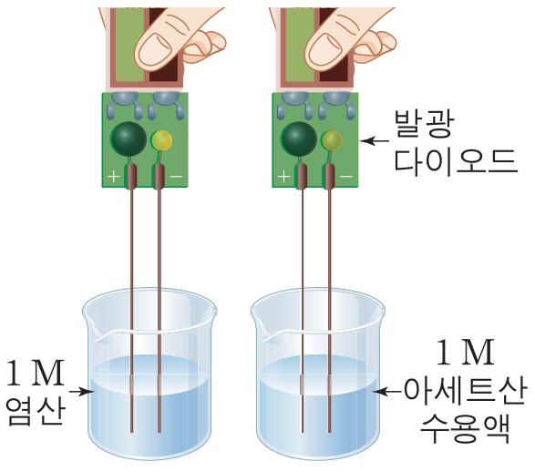
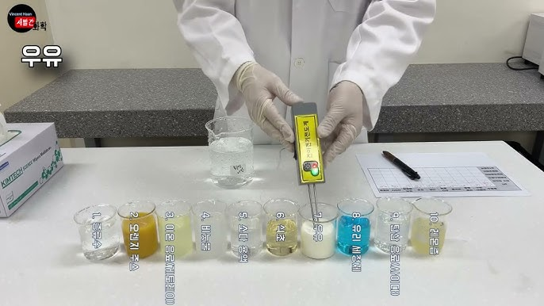

전기 전도성의 원리
수용액에서 전기 전도성은 이온의 존재에 의해 결정됩니다. 이온화된 물질은 전하를 띤 입자(이온)를 생성하여 전류가 흐를 수 있게 합니다.
분자성 물질과 이온결합 물질 비교
| 구분 | 분자성 물질 | 이온결합 물질 |
|---|---|---|
| 수용액 상태 | 이온화 시 전도성 있음 | 전기 전도성 있음 |
| 예시 | HCl, H2SO4 | NaCl, KOH |

